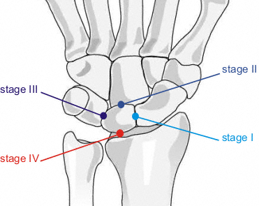

Perilunate dislocations and fracture-dislocations:
Mayfield classification: perilunate dislocation injury progression (lesser arc): Stage I: scapholunate interval disruption Stage II: midcarpal/capitolunate interval disruption (Space of Poirier) Stage III: lunotriquetral interval disruption leading to separation of carpus from lunate dorsally Stage IV: disruption of the radiolunate articulation leading to volar dislocation of lunate

Mayfield classification
Perilunate fracture-dislocation injury progression (greater arc): Stage I: transscaphoid dislocation Stage II: Stage I + transcapitate dislocation Stage III: Stage II + transtriquetral dislocation with or without hamate injury
OTA: intercarpal dislocation (70-B)
Scapholunate instability
Descriptive:
Acute or chronic
Static or dynamic
Radiocarpal fracture-dislocations:
Moneim: Type I: radiocarpal fracture-dislocation without associated intercarpal dissociation Type II: radiocarpal fracture-dislocation with associated intercarpal dissociation
Dumontier: Group 1: radiocarpal fracture-dislocation, purely ligamentous or small avulsion off radius Group 2: radiocarpal fracture-dislocation, associated with large radial styloid fracture